2026-08-29 · 실제 브라우저 계측 · 스크린샷 31장 · 이미지를 누르면 원본 크기로 열립니다
편집기는 처음부터 다 만들어져 있었습니다. 버튼이 화면 밖 67px 에 있어서 아무도 누를 수 없었을 뿐입니다.
큰 모니터로 바꿔도 안 보입니다. 삐져나간 양이 화면 크기와 상관없이 항상 67px 이기 때문입니다. 여기서 시작해 구조물을 못 고치게 만드는 원인을 다섯 개 찾아 전부 고쳤습니다.
데이터베이스 → 세계 → 구조물 로 들어가면 표와 오른쪽 미리보기는 정상으로 나옵니다. 그런데 그 아래 있어야 할 동작 버튼이 없습니다. 스크롤을 내려야 나타납니다.
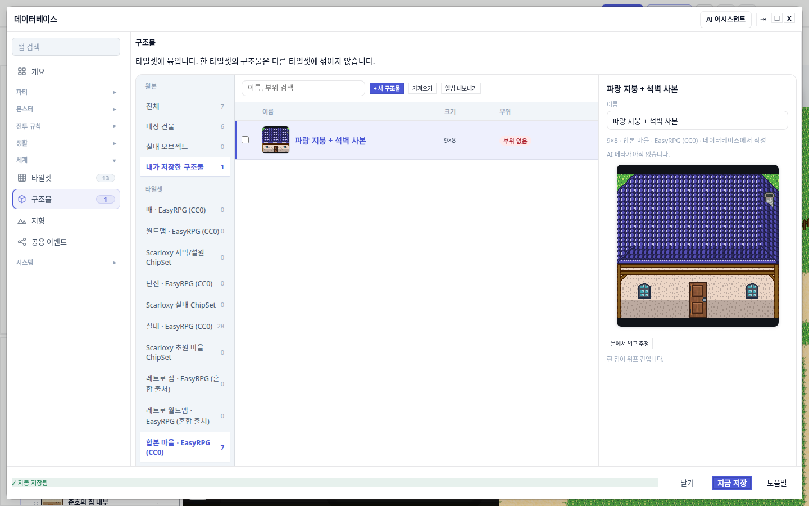
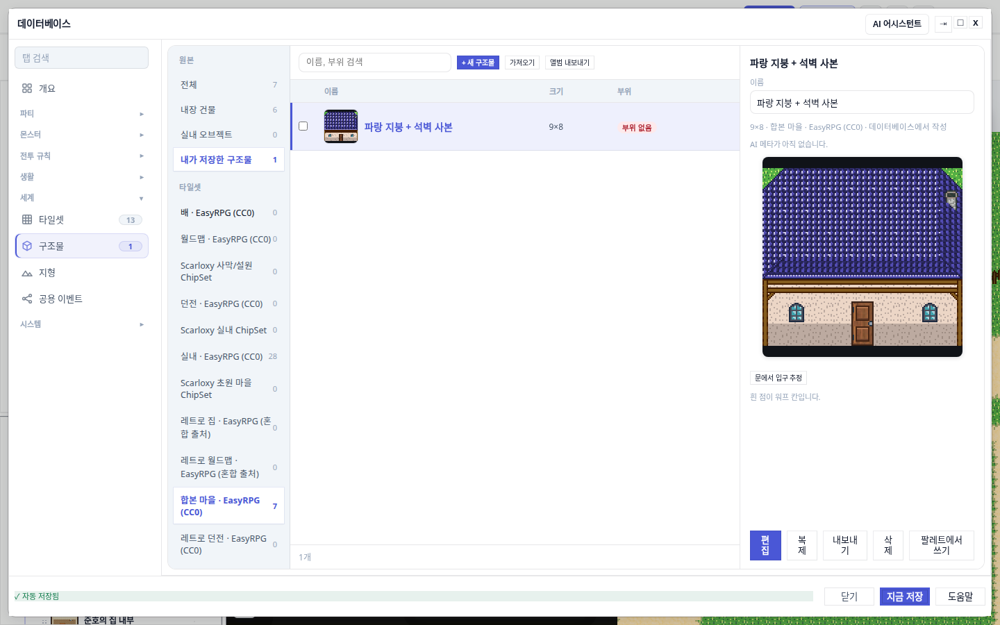
[편집] 이 나타납니다. 스크롤 막대가 잘 안 보이니 사람은 버튼이 없다고 판단합니다.세 가지 해상도로 재봤습니다. 1366×768, 1440×900, 1920×1080 — 삐져나간 양이 전부 똑같이 67px 입니다. 모니터를 키워도 해결되지 않는 종류의 문제입니다.
구조물 화면은 이렇게 쌓여 있습니다. 제목 "구조물", 그 아래 설명 한 줄, 그 아래 본체(표 + 미리보기 + 버튼). 문제는 본체가 자기 높이를 "담는 그릇 전체"로 잡았다는 점입니다. 앞에 있는 제목과 설명 67px 을 없는 것처럼 계산했습니다.
본체에 height:100% 가 붙어 있었습니다.
담는 그릇이 display 지정 없는 일반 블록이라, 100% 가 제목·설명을 포함한 전체 높이를 뜻합니다.
버튼 줄은 margin-top:auto 로 본체 바닥에 붙으니, 본체가 67px 넘친 만큼 정확히 밖으로 밀립니다.
담는 그릇을 세로 flex 로 바꾸고 본체의 height:100% 를 뺐습니다.
세로 flex 안에서는 flex:1 이 "제목·설명을 뺀 남은 높이"를 정확히 줍니다.
버튼도 5개 → 3개로 줄여 줄이 접히지 않게 했습니다.
새로 발명한 것이 없습니다. 옆에 있는 타일셋 탭은 이미 같은 처방을 갖고 있었습니다
(:has(.tileset-db-workspace)). 구조물 탭만 빠져 있었습니다.
주의할 함정 — 이걸 flex-wrap: wrap 으로 고치려 들면 더 나빠집니다.
버튼 줄이 두 단이 되어 오히려 높아집니다. 실제로 버튼 5개가 352px 폭에 안 들어가 글자가 두 줄로 접혀
줄 높이가 38px → 53px 로 두꺼워진 것이 이 버그를 아슬아슬한 상태에서 완전히 넘어가게 만든 요인이었습니다.
해법은 버튼 개수를 줄이는 것입니다.
[편집] 바닥이 y=831, 잘리는 경계는 y=829 → 화면 밖. 그 좌표를 찍어보면 div.database-footer-status 가 잡힙니다.[편집] 바닥이 y=807 — 경계 안쪽 22px. 스크롤 여지 0. 그 좌표를 찍으면 실제 버튼이 잡힙니다.내장 건물은 편집이 잠겨 있고 화면은 "복제해서 쓰세요" 라고 안내합니다. 그런데 복제를 눌러도 아무 일도 안 일어나 보였습니다. 사본은 만들어졌지만 오른쪽 미리보기가 계속 원본(잠긴 것)을 보고 있었기 때문입니다.
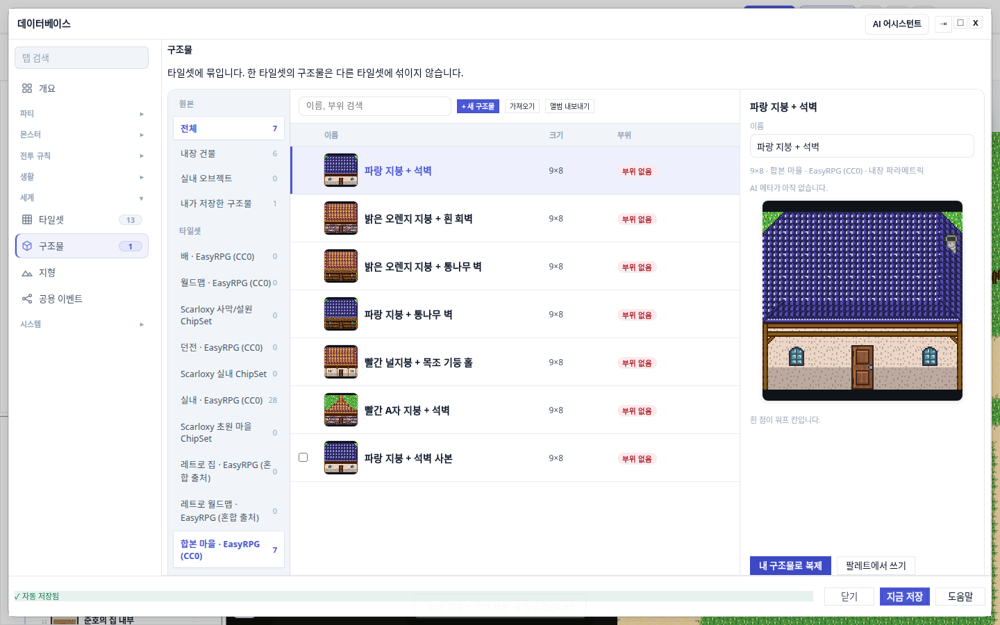
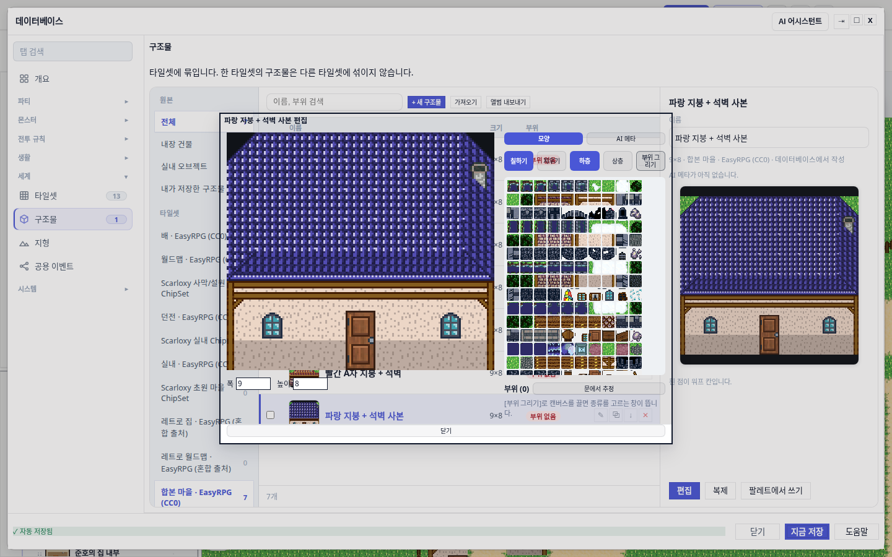
고치는 데 값 세 개를 함께 맞춰야 했습니다. 선택만 사본으로 옮기면 원본 칩이 여전히 "내장 건물"이라 사용자 구조물이 목록에서 통째로 걸러지고, 검색어가 남아 있으면 사본 이름이 걸러집니다. 그러면 화면을 다시 그리는 순간 선택이 목록 첫 줄로 되돌아갑니다. 그래서 선택·원본·검색어를 한 번에 바꾸는 함수 하나로 묶었습니다.
전에는 편집으로 가는 길이 오른쪽 미리보기 아래 버튼 하나뿐이었습니다 — 그것도 화면 밖에 있던 버튼입니다. 이제 표의 각 줄에 마우스를 올리면 동작 아이콘이 나타납니다.
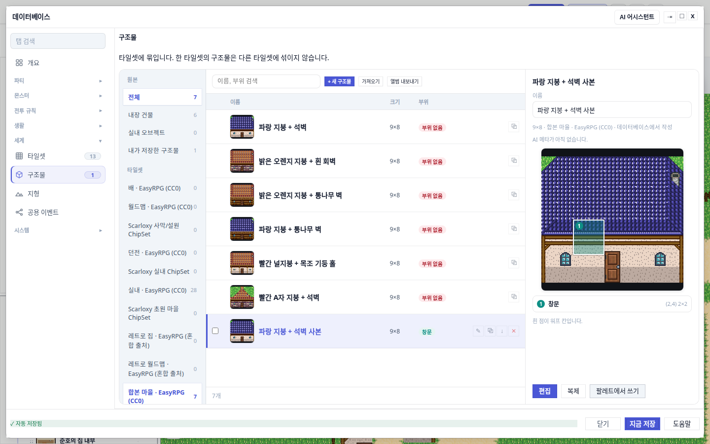
✎ 편집 · ⧉ 복제 · ↓ 내보내기 · ✕ 삭제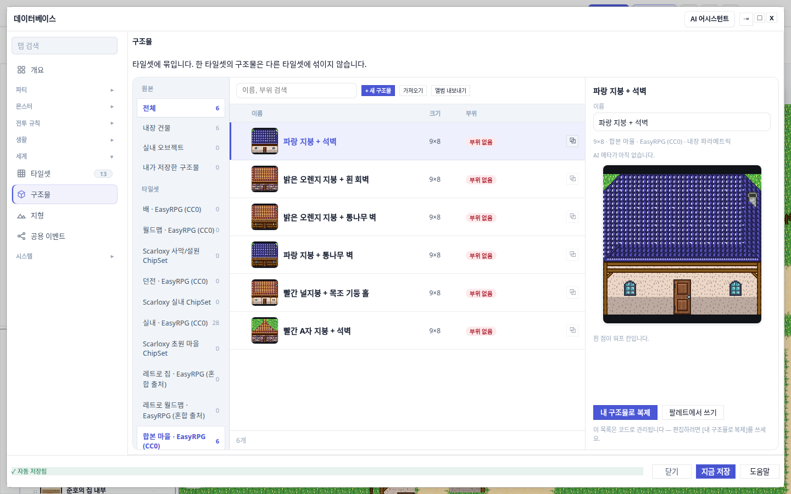
⧉ 하나만. 누르면 사본을 만들고 편집기까지 이어집니다. 내장 줄을 두 번 클릭해도 같습니다 — 전에는 아무 반응이 없었습니다.구조물에는 "부위"를 표시합니다 — 여기가 입구, 여기가 창문 같은 정보입니다. 그런데 드래그로 부위를 그리면 종류가 항상 "입구"로 고정돼 있었습니다. 창문이나 간판을 만들 방법이 코드에 아예 없었습니다.
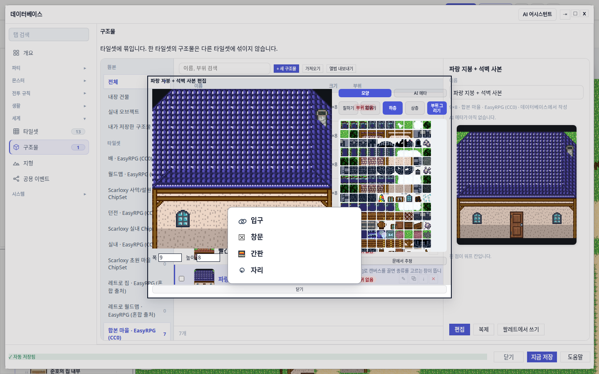
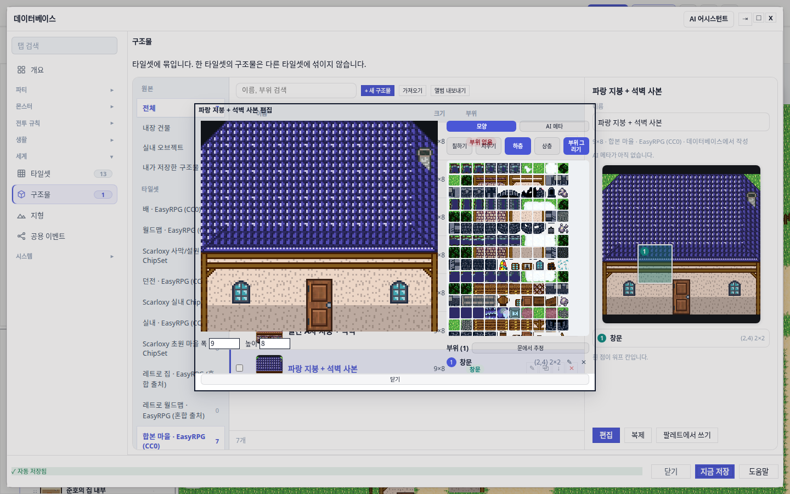
✎ 로 나중에 종류를 바꾸고 ✕ 로 지웁니다.가장 큰 변화입니다. 전에는 구조물을 맵에 찍으면 생타일로 녹아버렸습니다. "여기에 이 집이 있다"는 기록이 남지 않으니, 놓은 집을 다시 고르거나 깔끔히 지울 방법이 없었습니다. 잘못 놓으면 타일을 하나하나 손으로 되돌려야 했습니다.
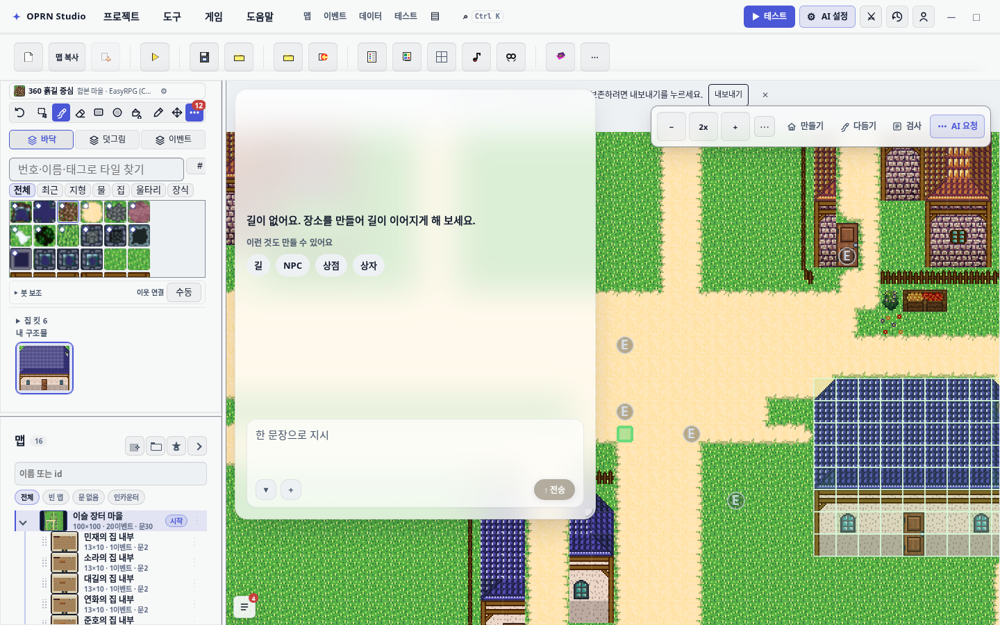
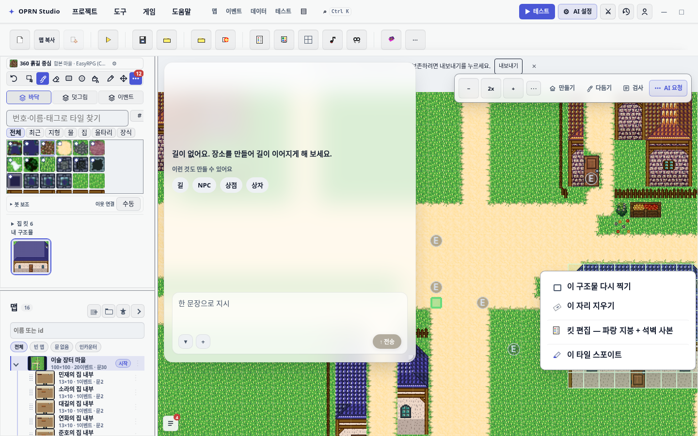
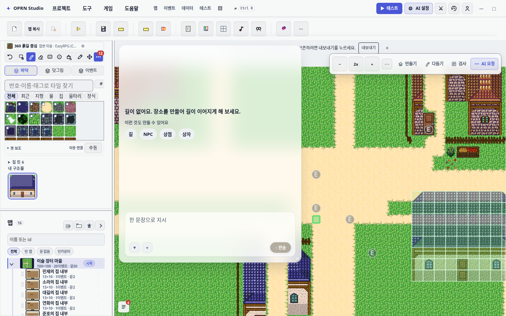
[이 자리 지우기] → 찍기 전 타일이 그대로 돌아옵니다.실제 프로젝트 데이터를 읽어 확인한 배치 기록입니다. 클릭 한 번에 정확히 한 건이고 (드래그로 수십 개가 생기지 않습니다), 찍기 전 타일 72칸(9×8)을 함께 저장해 두었습니다.
| 항목 | 고치기 전 | 고친 뒤 |
|---|---|---|
| 보이는 영역 밖으로 삐진 양 | 67px | 0px |
[편집] 버튼 바닥 위치 | y = 831 | y = 807 (경계 829보다 22px 안쪽) |
| 그 좌표에 실제로 있는 것 | div.database-footer-status | button (진짜 버튼) |
| 남은 스크롤 여지 | 67px | 0px |
| 동작 버튼 개수 / 줄 높이 | 5개 / 53px | 3개 / 38px |
| 해상도 1366·1440·1920 | 셋 다 삐짐 67px | 셋 다 0px |
| 부위 종류 고를 수 있나 | 아니오 — "입구" 고정 | 예 — 드래그 후 팝오버 |
| 맵에 놓은 구조물 다시 고르기 | 불가 — 생타일로 녹음 | 우클릭 메뉴 4항목 |
클릭이 되는지로는 확인할 수 없습니다. 자동 테스트의 클릭은 누르기 전에 요소를 화면 안으로 스크롤합니다 — 사람은 못 누르는 버튼도 테스트는 스크롤해서 누릅니다. 그래서 이 버그가 있는 동안에도 테스트는 초록불이었습니다. "보인다"는 검사도 부족합니다. 조상 요소의 넘침 잘림은 보지 않기 때문입니다.
그래서 좌표로 판정했습니다. 스크롤을 맨 위로 되돌린 뒤 버튼 위치를 재고, 그 좌표에 실제로 무엇이 있는지 찍어보고, 스크롤 여지가 0인지 확인하고, 마지막으로 좌표를 직접 클릭했습니다. 이건 자동 스크롤을 거치지 않는 진짜 증명입니다.
| 검증 | 결과 |
|---|---|
| 유닛 테스트 (구조물 관련 9개 파일) | 156 / 156 통과 |
| 배치 기능 신규 유닛 | 18 / 18 통과 |
브라우저 e2e db-structure-editor | 4 / 4 통과 |
| 데이터베이스 창 크기 불변식 | 3 / 3 통과 — 구조물 탭 1000×744, 다른 탭과 동일 |
타입 검사 tsc | 이번에 만진 파일 오류 0건 |
| CSS 예산 게이트 | 회귀 0건 · 새 CSS 파일 0개 · 하드코딩 색 2개 감소 |
전체 빌드 npm run build | 통과 (출하 플레이어 산출물 포함) |
| 브라우저 왕복 실측 | 찍기 → 배치 1건 → 우클릭 메뉴 4항목 → 지우기 → 배치 0건 |
[다시 찍기] 를 눌러야 합니다. 의도한 범위입니다 — 자동 전파는 사람이 손댄 맵을 조용히 덮어쓸 위험이 큽니다.[킷 편집] 로 구조물 탭까지만 열립니다. 그 킷 자체는 코드라서 편집기가 없고, "복제해 쓰세요" 안내가 뜹니다.titleGraphic 유실), 투명 소품 타일 라우팅. 실패 출력에 이번 새 필드가 한 번도 등장하지 않는 것으로 무관함을 확인했습니다.| 무엇 | 어디 |
|---|---|
| 잘림 수정 | src/styles/editor/harness-suggestion.css |
| 복제 → 편집 연결, 행 아이콘 | src/editor/panels/structureKitDbTab.ts |
| 부위 종류 팝오버, 편집기 방어 | src/editor/panels/structureKitEditorDialog.ts |
| 인스펙터 동작 3개로 축소 | src/editor/panels/structureKitInspector.ts |
| 배치 자료구조와 순수 계산 | src/project/structurePlacements.ts (신규) |
| 배치 기록·복원·재시공 | src/editor/structurePlacementActions.ts (신규) |
| 배치 우클릭 메뉴 | src/editor/panels/structurePlacementContextMenu.ts (신규) |
| 찍을 때 기록 연결 | src/editor/TilePaintEngine.ts · src/editor/EditScene.ts |
| AI 도구가 찍을 때도 기록 | src/editor/tools/structureKitTools.ts |
| 정합성 검사·수리 | src/project/io/references.ts |
| 테스트 | test/structurePlacements.test.ts (신규) · test/structureKitPartKindMenu.test.ts (신규) · test/structureKitDbTab.test.ts · test/e2e/db-structure-editor.spec.ts |
| 남긴 기록 | openwiki/editor-database.md · openwiki/testing.md |
이 보고서에 쓰인 스크린샷은 모두 실제 브라우저에서 이 저장소 코드를 띄워 찍은 것입니다.
shots/ 는 고치기 전, after/ 는 고친 뒤입니다. 숫자는 화면에서 직접 잰 값입니다.